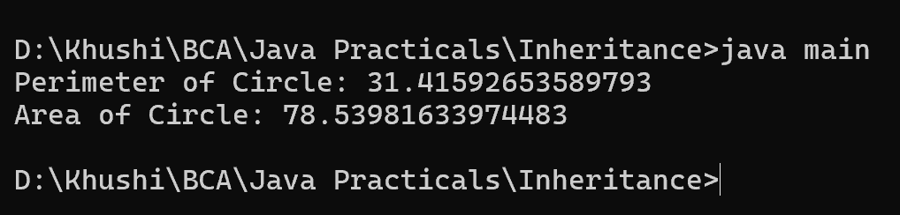

8. Write a Java program to create a class called Shape with methods called getPerimeter() and getArea(). Create a subclass called Circle that overrides the getPerimeter() and getArea() methods to calculate the area and perimeter of a circle.
class Shape {
public double getPerimeter() {
return 0;
}
public double getArea() {
return 0;
}
}
class Circle extends Shape {
private double radius;
public Circle(double radius) {
this.radius = radius;
}
@Override
public double getPerimeter() {
return 2 * Math.PI * radius;
}
@Override
public double getArea() {
return Math.PI * radius * radius;
}
}
class main {
public static void main(String[] args) {
Circle circle = new Circle(5);
System.out.println("Perimeter of Circle: " + circle.getPerimeter());
System.out.println("Area of Circle: " + circle.getArea());
}
}
